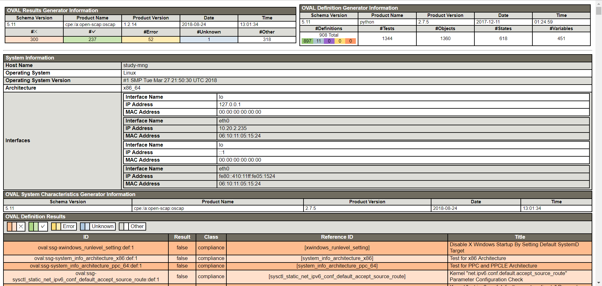
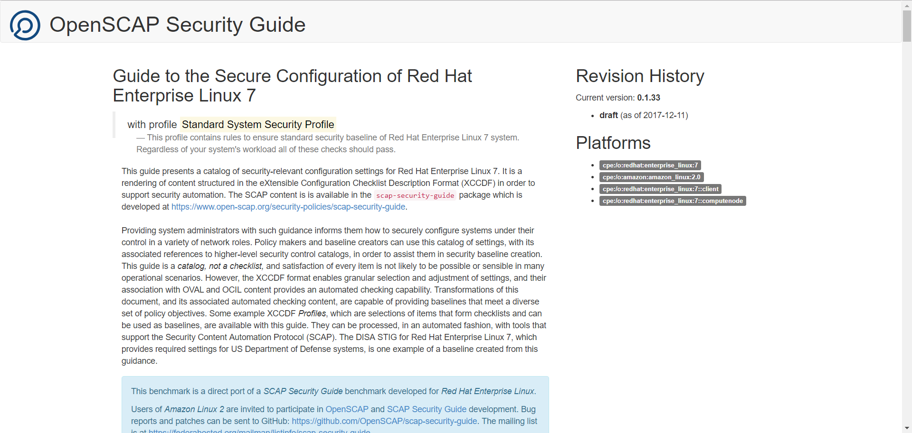

OpenSCAP
OS上の脆弱性やセキュリティリスクとなる設定をスキャン・レポートしてくれる
SCAPはアメリカ国立標準技術研究所(NIST)によって開発された情報セキュリティ対策の自動化と標準化のための規格で、
製品についてのID(CPE)、脆弱性についてのID(CVE)、設定についてのID(CCE)、脆弱性の深刻さのスコアづけ(CVSS)、自動チェックのための言語(OVAL)、
チェックリストのフォーマット (XCCDF) などが標準化されている
インストール
# yum install openscap-scanner openscap-utils scap-security-guide
インストールすると様々なチェックリストが下記に配置される
ls -l /usr/share/xml/scap/ssg/content/
合計 42456
-rw-r--r-- 1 root root 11837930 12月 11 2017 ssg-amzn2-ds.xml
-rw-r--r-- 1 root root 2635993 12月 11 2017 ssg-amzn2-xccdf.xml
-rw-r--r-- 1 root root 642 12月 11 2017 ssg-firefox-cpe-dictionary.xml
-rw-r--r-- 1 root root 3414 12月 11 2017 ssg-firefox-cpe-oval.xml
-rw-r--r-- 1 root root 234465 12月 11 2017 ssg-firefox-ds.xml
-rw-r--r-- 1 root root 32019 12月 11 2017 ssg-firefox-ocil.xml
-rw-r--r-- 1 root root 43429 12月 11 2017 ssg-firefox-oval.xml
-rw-r--r-- 1 root root 141892 12月 11 2017 ssg-firefox-xccdf.xml
-rw-r--r-- 1 root root 1397 12月 11 2017 ssg-jre-cpe-dictionary.xml
-rw-r--r-- 1 root root 5369 12月 11 2017 ssg-jre-cpe-oval.xml
-rw-r--r-- 1 root root 158029 12月 11 2017 ssg-jre-ds.xml
-rw-r--r-- 1 root root 12835 12月 11 2017 ssg-jre-ocil.xml
-rw-r--r-- 1 root root 18818 12月 11 2017 ssg-jre-oval.xml
-rw-r--r-- 1 root root 111743 12月 11 2017 ssg-jre-xccdf.xml
-rw-r--r-- 1 root root 2977 12月 11 2017 ssg-rhel6-cpe-dictionary.xml
-rw-r--r-- 1 root root 23479 12月 11 2017 ssg-rhel6-cpe-oval.xml
-rw-r--r-- 1 root root 6923996 12月 11 2017 ssg-rhel6-ds.xml
-rw-r--r-- 1 root root 371560 12月 11 2017 ssg-rhel6-ocil.xml
-rw-r--r-- 1 root root 1380375 12月 11 2017 ssg-rhel6-oval.xml
-rw-r--r-- 1 root root 1683217 12月 11 2017 ssg-rhel6-xccdf.xml
-rw-r--r-- 1 root root 3803 12月 11 2017 ssg-rhel7-cpe-dictionary.xml
-rw-r--r-- 1 root root 23479 12月 11 2017 ssg-rhel7-cpe-oval.xml
-rw-r--r-- 1 root root 11961196 12月 11 2017 ssg-rhel7-ds.xml
-rw-r--r-- 1 root root 851069 12月 11 2017 ssg-rhel7-ocil.xml
-rw-r--r-- 1 root root 2096046 12月 11 2017 ssg-rhel7-oval.xml
-rw-r--r-- 1 root root 2863621 12月 11 2017 ssg-rhel7-xccdf.xml
チェックリストは上記のように少し古い
最新版の定義を参照したい場合は下記のサイトから入手できる
https://github.com/OpenSCAP/scap-security-guide
# wget https://github.com/OpenSCAP/scap-security-guide/releases/download/v0.1.37/scap-security-guide-0.1.40.zip
# unzip scap-security-guide-0.1.40.zip
# cd scap-security-guide-0.1.40
# cp -p *.xml /usr/share/xml/scap/ssg/content/
RedhatLinuxの場合インストールパッケージに関するチェックリストを下記で公開している
http://www.redhat.com/security/data/metrics/com.redhat.rhsa-all.xccdf.xml
http://www.redhat.com/security/data/oval/com.redhat.rhsa-all.xml
# cd /usr/share/xml/scap/ssg/content/
# wget http://www.redhat.com/security/data/metrics/com.redhat.rhsa-all.xccdf.xml
# wget http://www.redhat.com/security/data/oval/com.redhat.rhsa-all.xml
診断
OSや診断したい項目に合わせてポリシーファイルを選択する
ポリシーファイルの内容や利用できるオプションを確認
# oscap info ssg-amzn2-ds.xml
Document type: Source Data Stream
Imported: 2017-12-11T10:25:48
Stream: scap_org.open-scap_datastream_from_xccdf_ssg-rhel7-xccdf-1.2.xml
Generated: (null)
Version: 1.2
Checklists:
Ref-Id: scap_org.open-scap_cref_ssg-rhel7-xccdf-1.2.xml
Status: draft
Generated: 2017-12-11
Resolved: true
Profiles:
xccdf_org.ssgproject.content_profile_standard
xccdf_org.ssgproject.content_profile_pci-dss
xccdf_org.ssgproject.content_profile_C2S
xccdf_org.ssgproject.content_profile_rht-ccp
xccdf_org.ssgproject.content_profile_common
xccdf_org.ssgproject.content_profile_stig-rhel7-disa
xccdf_org.ssgproject.content_profile_stig-rhevh-upstream
xccdf_org.ssgproject.content_profile_ospp-rhel7
xccdf_org.ssgproject.content_profile_cjis-rhel7-server
xccdf_org.ssgproject.content_profile_docker-host
xccdf_org.ssgproject.content_profile_nist-800-171-cui
詳細はわからないが、PCIDSSのプロファイルやdocker用プロファイルがあるのがわかる。
スキャンの実行
- OVAL定義を利用したすべての定義について評価
# oscap oval eval --results /tmp/result_ssg-amzn2-ds.xml /usr/share/xml/scap/ssg/content/ssg-amzn2-ds.xml
# oscap oval generate report /tmp/result_ssg-amzn2-ds.xml > /tmp/result_ssg-amzn2-ds.html

正直わからない
- XCCDF定義を利用した定義について評価
# oscap xccdf eval --profile standard --report /tmp/result_ssg-amzn2-xccdf.html --fetch-remote-resources /usr/share/xml/scap/ssg/content/ssg-amzn2-xccdf.xml

OS設定についてレポートと、どう対応するべきかを確認できる
- RedhatのXCCDF定義を利用した定義について評価
RedhatOS上でのみ利用できる
# oscap xccdf eval --report /tmp/com.redhat.rhsa-all.xccdf.html --fetch-remote-resources /usr/share/xml/scap/ssg/content/com.redhat.rhsa-all.xccdf.xml